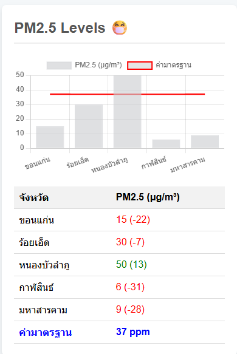

รายงานคุณภาพสิ่งแวดล้อม: ระดับ PM2.5
2.5 ของ 5 จังหวัด">
ภาพที่ 2: ผลระดับ PM2.5 ของ 5 จังหวัด
บทนำ
รายงานฉบับนี้จัดทำขึ้นเพื่ออภิปรายผลและให้ข้อเสนอแนะสำหรับการจัดการคุณภาพอากาศในพื้นที่ 5 จังหวัดได้แก่ ขอนแก่น ร้อยเอ็ด หนองบัวลำภู กาฬสินธ์ และมหาสารคาม โดยใช้ข้อมูลจากผลการตรวจวัดระดับ PM2.5 และค่ามาตรฐานที่กำหนดไว้ที่ 37 ppm เป็นเกณฑ์ในการประเมิน
การอภิปรายผล
ภาพที่ 2 แสดงระดับ PM2.5 ของ 5 จังหวัด โดยมีค่ามาตรฐานอยู่ที่ 37 ppm
- หนองบัวลำภู เป็นจังหวัดเดียวที่มีค่าเฉลี่ย PM2.5 อยู่ที่ 50 µg/m³ ซึ่งสูงกว่าค่ามาตรฐานที่ 37 ppm อยู่ 13 หน่วย แสดงให้เห็นว่าจังหวัดนี้ประสบปัญหาคุณภาพอากาศเกินเกณฑ์มาตรฐาน
- ขอนแก่น, ร้อยเอ็ด, กาฬสินธ์ และมหาสารคาม จังหวัดเหล่านี้มีค่า PM2.5 ต่ำกว่าค่ามาตรฐานทั้งหมด
- ขอนแก่น มีค่า PM2.5 อยู่ที่ 15 µg/m³ ซึ่งต่ำกว่ามาตรฐาน 22 หน่วย
- ร้อยเอ็ด มีค่า PM2.5 อยู่ที่ 30 µg/m³ ซึ่งต่ำกว่ามาตรฐาน 7 หน่วย
- กาฬสินธ์ มีค่า PM2.5 อยู่ที่ 6 µg/m³ ซึ่งต่ำที่สุดในกลุ่ม
- มหาสารคาม มีค่า PM2.5 อยู่ที่ 9 µg/m³
ข้อเสนอแนะสำหรับการจัดการคุณภาพอากาศ
แม้ว่าคุณภาพอากาศในหลายจังหวัดจะอยู่ในเกณฑ์ที่ดี แต่การดำเนินการเชิงรุกเป็นสิ่งสำคัญเพื่อป้องกันไม่ให้คุณภาพอากาศลดลง จึงมีข้อเสนอแนะดังต่อไปนี้:
สำหรับจังหวัดหนองบัวลำภู
- เร่งดำเนินการแก้ไข ควรมีการตรวจสอบและควบคุมแหล่งกำเนิดมลพิษทางอากาศอย่างเร่งด่วน เช่น การจราจร การเผาในที่โล่ง หรือภาคอุตสาหกรรม
- จัดทำแผนปฏิบัติการ พัฒนาและบังคับใช้แผนการจัดการคุณภาพอากาศในระยะสั้นและระยะยาว เพื่อลดค่า PM2.5 ให้กลับมาอยู่ในเกณฑ์มาตรฐาน
- สื่อสารสาธารณะ แจ้งเตือนประชาชนถึงสถานการณ์และผลกระทบต่อสุขภาพ พร้อมให้คำแนะนำในการป้องกันตนเอง เช่น การสวมหน้ากากอนามัย
สำหรับจังหวัดที่มีคุณภาพอากาศดี (ขอนแก่น, ร้อยเอ็ด, กาฬสินธ์, มหาสารคาม)
- เฝ้าระวังอย่างต่อเนื่อง แม้ว่าคุณภาพอากาศจะดี แต่ก็ควรมีการตรวจวัดและติดตามสถานการณ์อย่างสม่ำเสมอ เพื่อป้องกันไม่ให้เกิดปัญหาในอนาคต
- คงไว้ซึ่งมาตรการเชิงป้องกัน สนับสนุนนโยบายและมาตรการที่ช่วยรักษาคุณภาพอากาศให้ดีอยู่เสมอ เช่น การส่งเสริมการใช้พลังงานสะอาด และการขนส่งสาธารณะ
- เตรียมความพร้อมรับมือ จัดทำแผนฉุกเฉินเพื่อเตรียมพร้อมรับมือในกรณีที่เกิดค่า PM2.5 สูงขึ้นผิดปกติ เช่น จากการเผาขยะในพื้นที่ใกล้เคียง
ข้อเสนอแนะสำหรับทุกจังหวัด
- ส่งเสริมการปลูกป่าและพื้นที่สีเขียว การเพิ่มพื้นที่สีเขียวในเขตเมืองและพื้นที่เกษตรจะช่วยดูดซับมลพิษทางอากาศได้
- สร้างความตระหนักรู้ จัดกิจกรรมให้ความรู้แก่ประชาชนเกี่ยวกับแหล่งกำเนิดและผลกระทบของ PM2.5 เพื่อส่งเสริมการมีส่วนร่วมในการลดมลพิษ